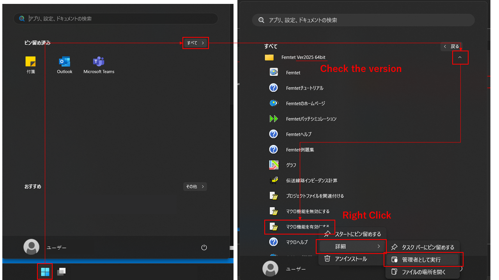

Welcome to PyFemtet’s documentation!
概要
PyFemtet は ムラタソフトウェア製 CAE ソフト Femtet の拡張機能を提供します。
PyFemtet はオープンソースライブラリであり、無償かつ商用利用可能です。
このライブラリは現状のまま提供され、いかなる保証もいたしません。
PyFemtet は Femtet 本体のライセンスを一切変更しません。
評価のための試用版 Femtet は ムラタソフトウェア にお問い合わせください。
PyFemtet の主要な機能
PyFemtet は Femtet の Python マクロインターフェースを利用して機能を提供するライブラリです。現在、 PyFemtet の唯一の機能は設計パラメータの最適化 であり、pyfemtet.opt サブパッケージとして実装されています。
pyfemtet.opt は、以下の特徴を有します。
単目的および多目的の最適化
プロセスモニタによるリアルタイム進行状況の表示
複数の Femtet インスタンスによる並列計算
Excel 等で分析が容易な csv 形式での結果出力
例題


Tip
例題 セクションにより多くの実施例があります。
シンプルな API
下記は多目的最適化の実施例です。add_parameter() と add_objective() で問題を設定し、optimize() で実施することができます。それ以外は通常の Femtet のマクロスクリプトを使用します。詳細な実施例は 使い方 セクションを確認してください。
from pyfemtet.opt import FEMOpt
def max_displacement(Femtet):
dx, dy, dz = Femtet.Gogh.Galileo.GetMaxDisplacement()
return dy
def volume(Femtet):
w = Femtet.GetVariableValue('w')
d = Femtet.GetVariableValue('d')
h = Femtet.GetVariableValue('h')
return w * d * h
if __name__ == '__main__':
femopt = FEMOpt()
femopt.add_parameter('w', 10, 2, 20)
femopt.add_parameter('d', 10, 2, 20)
femopt.add_objective(max_displacement, name='max_displacement', direction=0)
femopt.add_objective(volume, name='volume', direction='minimize')
femopt.optimize(n_trials=20)
インストール
注釈
PyFemtet は Windows にのみ対応しています。
注釈
Python 及び Femtet がインストールされており Femtet のマクロが有効化されている環境では単に pip install pyfemtet を実行してください。以下の手順は、Python, Femtet 及び PyFemtet のフルセットアップの手順です。
Femtet（2023.0 以降）のインストール
初めての方は、試用版または個人版のご利用をご検討ください。➡ muratasoftware.com
注釈
最新版以外の Femtet では PyFemtet の機能の一部が制限されます。
Femtet のマクロ有効化
 Femtet インストール後にスタートメニューから 「マクロ機能を有効化する」 を実行してください。この手順には管理者権限が必要です。
Python（3.9.3 以上）のインストール
リンク先のダウンロードリンクからインストーラをダウンロードし、実行してください。➡ python.org
Tip
最新版でないバージョンの Python をダウンロードするには下記のスクリーンショットを参考にご自身の環境に応じたインストーラをダウンロードしてください。
Tip
pyfemtet.optは現在主に Python 3.11 環境で開発されており、インストールや実施例の実行に不具合がある場合は Python 3.11 環境の構築をご検討ください。

このスクリーンショットでは、64 bit 版 Windows 向け Python 3.11.7 のインストーラへのリンクの場所の例を示しています。

インストーラ画面。
pyfemtetのインストールコマンドプロンプトを起動してください。

スタート ボタンからのコマンドプロンプト起動
コマンドプロンプトで下記コマンドを実行してください。ライブラリのダウンロード及びインストールが始まります。
py -m pip install pyfemtet --no-warn-script-location

コマンドプロンプトで pip コマンドを実行
インストールが終了すると、Successfully installed の表示の後、コマンドプロンプトの制御が戻ります。

インストール中

インストール終了後
注釈
環境によりますが、インストールには 5 分程度を要します。
注釈
インストール終了時に
[notice] A new release of pip is available:などの表示がされることがありますが、エラーではなく、無視しても問題ありません。Femtet マクロ定数の設定
コマンドプロンプトで下記コマンドを実行してください。:
py -m win32com.client.makepy FemtetMacro
インストールが終了すると、コマンドプロンプトの制御が戻ります。

makepy 終了後
以上で終了です。
Tip
動作確認には、はじめに 例題 のサンプルを閲覧いただくことをお勧めします。